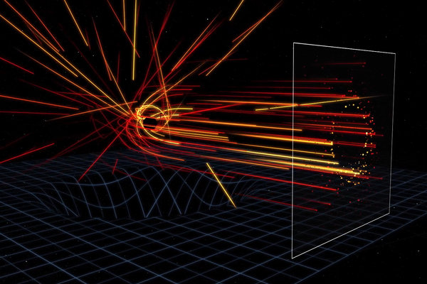
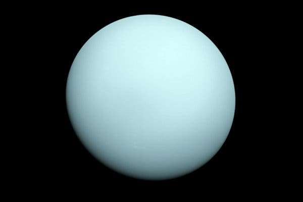
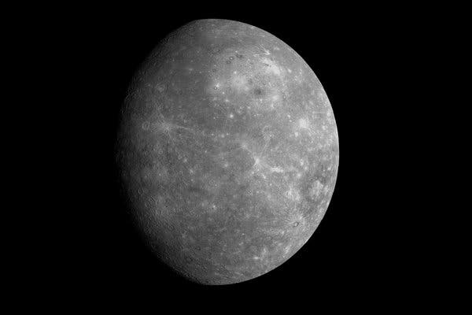
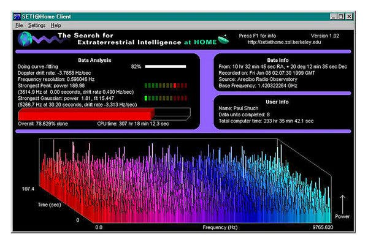
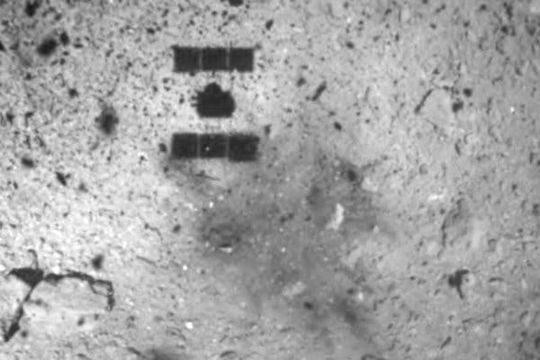
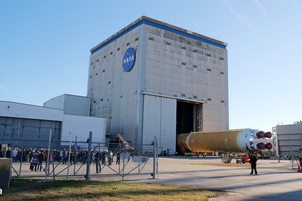

A version of this article appears in print on March 18, 2014, Section A, Page 1 of the New York edition with the headline: Space Ripples Reveal Big Bang’s Smoking Gun. Order Reprints | Today's Paper | Subscribe
Space Ripples Reveal
Big Bang’s Smoking Gun

Alan Guth was one of the first physicists to hypothesize the
existence of inflation, which explains how the universe expanded
so uniformly and so quickly in the instant after the Big Bang 13.8
billion years ago.
Rick Friedman for The New York Times
CAMBRIDGE, Mass. — One night late in 1979, an itinerant young
physicist named Alan Guth, with a new son and a year’s appointment
at Stanford, stayed up late with his notebook and equations,
venturing far beyond the world of known physics.
He was trying to understand why there was no trace of some exotic
particles that should have been created in the Big Bang. Instead
he discovered what might have made the universe bang to begin
with. A potential hitch in the presumed course of cosmic evolution
could have infused space itself with a special energy that exerted
a repulsive force, causing the universe to swell faster than the
speed of light for a prodigiously violent instant.
If true, the rapid engorgement would solve paradoxes like why the
heavens look uniform from pole to pole and not like a jagged,
warped mess. The enormous ballooning would iron out all the
wrinkles and irregularities. Those particles were not missing, but
would be diluted beyond detection, like spit in the ocean.
“SPECTACULAR REALIZATION,” Dr. Guth wrote across the top of the
page and drew a double box around it.
On Monday, Dr. Guth’s starship came in. Radio astronomers reported
that they had seen the beginning of the Big Bang, and that his
hypothesis, known undramatically as inflation, looked right.
Reaching back across 13.8 billion years to
the first sliver of cosmic time with telescopes at the South Pole, a team of astronomers led by
John M. Kovac of the Harvard-Smithsonian Center for Astrophysics
detected ripples in the fabric of space-time — so-called
gravitational waves
— the signature of a universe being wrenched violently apart when
it was roughly a trillionth of a trillionth of a trillionth of a
second old. They are the long-sought smoking-gun evidence of
inflation, proof, Dr. Kovac and his colleagues say, that Dr. Guth
was correct.
Inflation has been the workhorse of cosmology for 35 years, though many, including Dr. Guth, wondered whether it could ever be proved. If corroborated, Dr. Kovac’s work will stand as a landmark in science comparable to the recent discovery of dark energy pushing the universe apart, or of the Big Bang itself. It would open vast realms of time and space and energy to science and speculation. Confirming inflation would mean that the universe we see, extending 14 billion light-years in space with its hundreds of billions of galaxies, is only an infinitesimal patch in a larger cosmos whose extent, architecture and fate are unknowable. Moreover, beyond our own universe there might be an endless number of other universes bubbling into frothy eternity, like a pot of pasta water boiling over. Editors’ Picks You Are Your Safest Sex Partner. Betty Dodson Wants to Help. They Survived the Spanish Flu, the Depression and the
‘As Big as It Gets’
In our own universe, it would serve as a window into the forces
operating at energies forever beyond the reach of particle
accelerators on Earth and yield new insights into gravity itself.
Dr. Kovac’s ripples would be the first direct observation of
gravitational waves, which, according to Einstein’s theory of
general relativity, should ruffle space-time. Marc Kamionkowski of
Johns Hopkins University, an early-universe expert who was not
part of the team, said, “This is huge, as big as it gets.” He
continued, “This is a signal from the very earliest universe,
sending a telegram encoded in gravitational waves.” The ripples
manifested themselves as faint spiral patterns in a bath of
microwave radiation that permeates space and preserves a picture
of the universe when it was 380,000 years old and as hot as the
surface of the sun. Dr. Kovac and his collaborators, working in an
experiment known as Bicep, for Background Imaging of Cosmic
Extragalactic Polarization, reported their results in a scientific
briefing at the Center for Astrophysics here on Monday and in a
set of papers submitted to The Astrophysical Journal.
The Theory of Inflation
Astronomers have found evidence to support the theory of inflation, which explains how the universe expanded so uniformly and so quickly in the instant after the Big Bang 13.8 billion years ago.

THE UNIVERSE is just under 14 billion years old. From our
position in the Milky Way galaxy, we can observe a sphere that is
now about 92 billion light-years across. But there's a mystery.
Wherever we look, the universe has an even temperature.
NOT ENOUGH TIME The universe is not old enough for light to
have traveled the vast distance from one side of the universe to
the other, and there has not been enough time for scattered
patches of hot and cold to mix into an even temperature.
DISTANT COFFEE At a smaller scale, imagine using a
telescope to look a mile in one direction. You see a coffee cup,
and from the amount of steam, you can estimate its temperature and
how much it has cooled.
COFFEE EVERYWHERE Now turn around and look a mile in the
other direction. You see a similar coffee cup, at exactly the same
temperature. Coincidence? Maybe. But if you see a similar cup in
every direction, you might want to look for another explanation.
STILL NOT ENOUGH TIME There has not been enough time to
carry coffee cups from place to place before they get cold. But if
all the coffee cups were somehow filled from a single coffee pot,
all at the same time, that might explain their even temperature.
INFLATION solves this problem. The theory proposes that,
less than a trillionth of a second after the Big Bang, the
universe expanded faster than the speed of light. Tiny ripples in
the violently expanding energy field eventually grew into the
large-scale structures of the universe.
FLUCTUATION Astronomers have now detected evidence of these
ancient fluctuations in swirls of polarized light in the cosmic
background radiation, which is energy left over from the early
universe. These are gravitational waves predicted by Einstein.
EXPANSION Returning to our coffee, imagine a single,
central pot expanding faster than light and cooling to an even
temperature as it expands. That is something like inflation. And
the structure of the universe mirrors the froth and foam of the
original pot.
By LARRY BUCHANAN and JONATHAN CORUM
Dr. Kovac said the chance that the results were a fluke was only
one in 10 million. Dr. Guth, now 67, pronounced himself “bowled
over,” saying he had not expected such a definite confirmation in
his lifetime.
“With nature, you have to be lucky,” he said. “Apparently we have
been lucky.” The results are the closely guarded distillation of
three years’ worth of observations and analysis. Eschewing email
for fear of a leak, Dr. Kovac personally delivered drafts of his
work to a select few, meeting with Dr. Guth, who is now a
professor at Massachusetts Institute of Technology (as is his son,
Larry, who was sleeping that night in 1979), in his office last
week. “It was a very special moment, and one we took very
seriously as scientists,” said Dr. Kovac, who chose his words as
carefully as he tended his radio telescopes. Andrei Linde of
Stanford, a prolific theorist who first described the most popular
variant of inflation, known as chaotic inflation, in 1983, was
about to go on vacation in the Caribbean last week when Chao-Lin
Kuo, a Stanford colleague and a member of Dr. Kovac’s team,
knocked on his door with a bottle of Champagne to
tell him the news.
Stanford Professor Andrei Linde celebrates physics breakthrough Video by StanfordUniversity
Confused, Dr. Linde called out to his wife, asking if she had
ordered anything. “And then I told him that in the beginning we
thought that this was a delivery but we did not think that we
ordered anything, but I simply forgot that actually I did order
it, 30 years ago,” Dr. Linde wrote in an email. Calling from
Bonaire, the Dutch Caribbean island, Dr. Linde said he was still
hyperventilating. “Having news like this is the best way of
spoiling a vacation,” he said. By last weekend, as social media
was buzzing with rumors that inflation had been seen and news
spread, astrophysicists responded with a mixture of jubilation and
caution.
Max Tegmark, a cosmologist at M.I.T., wrote in an email, “I think
that if this stays true, it will go down as one of the greatest
discoveries in the history of science.” John E. Carlstrom of the
University of Chicago, Dr. Kovac’s mentor and head of a competing
project called the South Pole Telescope, pronounced himself deeply
impressed. “I think the results are beautiful and very
convincing,” he said. Paul J. Steinhardt of Princeton, author of a
competitor to inflation that posits the clash of a pair of
universes as the cause of genesis, said that if true, the Bicep
result would eliminate his model, but he expressed reservations
about inflation. Lawrence M. Krauss of Arizona State and others
also emphasized the need for confirmation, noting that the new
results exceeded earlier estimates based on temperature maps of
the cosmic background by the European Space Agency’s Planck
satellite and other assumptions about the universe. “So we will
need to wait and see before we jump up and down,” Dr. Krauss said.
Corroboration might not be long in coming. The Planck spacecraft
will report its own findings this year. At least a dozen other
teams are trying similar measurements from balloons, mountaintops
and space. Spirals in the Sky Gravity waves are the latest and
deepest secret yet pried out of the cosmic microwaves, which were
discovered accidentally by Arno Penzias and Robert Wilson at Bell
Labs 50 years ago. They won the Nobel Prize. Dr. Kovac has spent
his career trying to read the secrets of these waves. He is one of
four leaders of Bicep, which has operated a series of increasingly
sensitive radio telescopes at the South Pole, where the thin, dry
air creates ideal observing conditions. The others are Clement
Pryke of the University of Minnesota, Jamie Bock of the California
Institute of Technology and Dr. Kuo of Stanford.
“The South Pole is the closest you can get to space and still be
on the ground,” Dr. Kovac said. He has been there 23 times, he
said, wintering over in 1994. “I’ve been hooked ever since,” he
said.

The Bicep2 telescope, in the foreground, was used to detect the faint spiraling gravity patterns — the signature of a universe being wrenched violently apart at its birth.Credit...Steffen Richter/Associated Press Steffen Richter/Associated Press
In 2002, he was part of a team that discovered that the microwave
radiation was polarized, meaning the light waves had a slight
preference to vibrate in one direction rather than another. This
was a step toward the ultimate goal of detecting the gravitational
waves from inflation. Such waves, squeezing space in one direction
and stretching it in another as they go by, would twist the
direction of polarization of the microwaves, theorists said. As a
result, maps of the polarization in the sky should have little
arrows going in spirals. Detecting those spirals required
measuring infinitesimally small differences in the temperature of
the microwaves. The group’s telescope, Bicep2, is basically a
giant superconducting thermometer. “We had no expectations what we
would see,” Dr. Kovac said. The strength of the signal surprised
the researchers, and they spent a year burning up time on a
Harvard supercomputer, making sure they had things right and
worrying that competitors might beat them to the breakthrough. A
Special Time The data traced the onset of inflation to a time that
physicists like Dr. Guth, staying up late in his Palo Alto house
35 years ago, suspected was a special break point in the evolution
of the universe.
Physicists recognize four forces at work in the world today:
gravity, electromagnetism, and strong and weak nuclear forces. But
they have long suspected that those are simply different
manifestations of a single unified force that ruled the universe
in its earliest, hottest moments. As the universe cooled,
according to this theory, there was a fall from grace, like some
old folk mythology of gods or brothers falling out with each
other. The laws of physics evolved, with one force after another
splitting away. That was where Dr. Guth came in. Under some
circumstances, a glass of water can stay liquid as the temperature
falls below 32 degrees, until it is disturbed, at which point it
will rapidly freeze, releasing latent heat. Similarly, the
universe could “supercool” and stay in a unified state too long.
In that case, space itself would become imbued with a mysterious
latent energy. Inserted into Einstein’s equations, the latent
energy would act as a kind of antigravity, and the universe would
blow itself up. Since it was space itself supplying the repulsive
force, the more space was created, the harder it pushed apart.
What would become our observable universe mushroomed in size at
least a trillion trillionfold — from a submicroscopic speck of
primordial energy to the size of a grapefruit — in less than a
cosmic eye-blink. Almost as quickly, this pulse would subside,
relaxing into ordinary particles and radiation. All of normal
cosmic history was still ahead, resulting in today’s observable
universe, a patch of sky and stars billions of light-years across.
“It’s often said that there is no such thing as a free lunch,” Dr.
Guth likes to say, “but the universe might be the ultimate free
lunch.”
Make that free lunches. Most of the hundred or so models resulting
from Dr. Guth’s original vision suggest that inflation, once
started, is eternal. Even as our own universe settled down to a
comfortable homey expansion, the rest of the cosmos will continue
blowing up, spinning off other bubbles endlessly, a concept known
as the multiverse. So the future of the cosmos is perhaps bright
and fecund, but do not bother asking about going any deeper into
the past. We might never know what happened before inflation, at
the very beginning, because inflation erases everything that came
before it. All the chaos and randomness of the primordial moment
are swept away, forever out of our view. “If you trace your cosmic
roots,” said Abraham Loeb, a Harvard-Smithsonian astronomer who
was not part of the team, “you wind up at inflation.”
More in Space and Astronomy

Harvard-Smithsonian Center for Astrophysics
Infinite Visions Were Hiding in the First Black Hole Image’s Rings
March 28

JPL/NASA
Uranus Ejected a Giant Plasma Bubble During Voyager 2’s Visit
March 27

NASA/Johns Hopkins University Applied Physics Laboratory/Carnegie Institution of Washington
Life on the Planet Mercury? ‘It’s Not Completely Nuts’
March 24

The Search for E.T. Goes on Hold, for Now
March 23

JAXA, via Associated Press
Remember When Japan Blasted an Asteroid? Here’s What We Learned
March 23

Gerald Herbert/Associated Press
Coronavirus Delays Work on NASA’s Moon Rocket and Capsule
March 19
Editors’ Picks
Harvard-Smithsonian Center for Astrophysics
Infinite Visions Were Hiding in the First Black Hole Image’s Rings
March 28
JPL/NASA
Uranus Ejected a Giant Plasma Bubble During Voyager 2’s Visit
March 27
NASA/Johns Hopkins University Applied Physics Laboratory/Carnegie Institution of Washington
Life on the Planet Mercury? ‘It’s Not Completely Nuts’
March 24